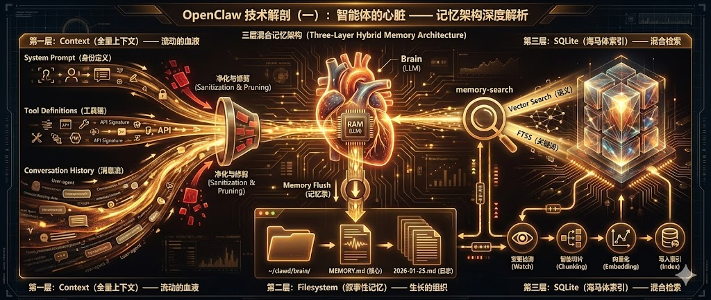

TLDR：
记忆系统的设计是现在 Agent 研究的最主要的课题，OpenClaw 采用了一套独特的三层混合记忆架构，巧妙地解决了 Context Window 限制与长期记忆留存之间的矛盾。本文将深入代码层级，解剖这一系统的运作机制。

如果说大语言模型 (LLM) 是智能体的大脑，那么记忆就是它的心脏。没有记忆，最聪明的模型也只是一个患有严重健忘症的学者——他博学多才，却在每一轮对话开始时都会忘记你是谁。
在构建 OpenClaw 时，该项目并未选择简单的“全部塞进向量数据库”的方案。相反，OpenClaw 模仿人类的认知机制，构建了一个三层混合记忆架构 (Three-Layer Hybrid Memory Architecture)。这不仅是数据的存储，更是一套关于 “遗忘与留存” 的流体动力学。
第一层：流动的血液 —— Context (全量上下文)
OpenClaw 的第一层记忆是短期感知 (Short-Term Context)。这就好比流淌在血管里的血液，新鲜、实时，直接供给大脑（LLM）。
但这里的“Context”并不仅仅指聊天的历史记录。在 OpenClaw 的架构中，一个完整的 Context 包裹 (Context Window) 实际上由三大板块拥挤地组成，它们都在争夺有限的 Token 资源：
1. System Prompt (身份与元指令)：这是 Agent 的“出厂设置”。包含了它作为 Clawdbot 的身份定义（来自 IDENTITY.md和SOUL.md）、核心指令集以及对当前时间、用户身份的认知。2. Tool Definitions (工具链)：这是 Agent 的“肢体认知”。系统会将几十个工具（读写文件、运行终端、搜索网页等）的 API 签名（JSON Schema）完整地注入到 Context 中。Agent 必须“记住”它能做什么，才能真正去做什么。 3. Conversation History (消息流)：这才是我们通常理解的“记忆”——用户和 AI 的交互历史。
1.1 Composition (解剖成分)
在上述三者中，前两者（System Prompt 和 Tool Definitions）通常是静态或半静态的，而 History 是高速膨胀的动态数据。在 OpenClaw 的运行时 (src/agents/pi-embedded-runner) 中，所有的对话都被维护在一个名为 messages 的数组中：
// 简化的 Message 结构示意
type AgentMessage = {
role: "user" | "assistant" | "system";
content: string | ToolCall | ToolResult;
metadata?: {
timestamp: number;
sender: string; // "User: Alice"
};
}1.2 Sanitization & Pruning (净化与修剪)
由于 System Prompt 和 Tools 占据了大量 Token，留给 History 的空间非常宝贵。为了防止 Context Window 溢出，OpenClaw 在 src/agents/pi-embedded-runner/run.ts 和 history.ts 中引入了严格的 Sanitization (透析) 机制：
1. 去重：连续重复的报错信息会被压缩。 2. 格式清洗：适配不同模型（Gemini / Claude）的特殊格式要求。 3. 修剪 (Pruning)：基于 limitHistoryTurns策略执行修剪。
1.3 Configuration (配置与限制)
关于上下文长度的限制，OpenClaw 采取了灵活的配置策略：
• 默认行为：无限制 (Unlimited)。
代码逻辑显示，如果未在配置中显式指定dmHistoryLimit，系统默认不会截断历史记录。此时唯一的限制仅来自通过evaluateContextWindowGuard计算出的模型 Context Window 物理上限。• 多级覆盖：
你可以通过config.json5对不同层级进行精细控制：• Provider 级： channels.slack.dmHistoryLimit = 20• User 级： channels.slack.dms["user_id"].historyLimit = 50
这种设计允许在一个简单的 Slack DM 中保留无限长的对话（直到模型撑不住），而在高频的自动化任务中强制截断以节省 Token。
第二层：生长的组织 —— Filesystem (叙事性记忆)
如果只靠 Context，Agent 就像只有 7 秒记忆的金鱼。OpenClaw 的第二层记忆，是基于文件系统的 叙事性记忆 (Narrative Memory)。
2.1 为什么是 Markdown?
OpenClaw 并没有把长期记忆存储在二进制数据库里，而是选择了最朴素的介质：Markdown 文件。
~/clawd/brain/
├── MEMORY.md # Layer 2a: 长期核心记忆 (Long-term Core)
└── memory/
├── 2026-01-26.md # Layer 2b: 每日叙事日志 (Daily Narrative)
├── 2026-01-25.md
└── ...这种设计的核心思路是：记忆本质上是一种叙事。Markdown 是人机通用的语言——人类可以随时打开 MEMORY.md 进行“外科手术”（修改记忆），LLM 也能自然地阅读和理解。
2.2 Memory Flush: 从 RAM 到 Disk 的泵
Context 中的信息是如何变为 Markdown 文件的？这就是 OpenClaw 最性感的工程设计：Memory Flush (记忆泵)。
整个过程可以简化为三个优雅的步骤：
1. 触发 (Trigger)
当 Token 使用量接近临界值（如 80%）时，系统会强行插入一条特殊的 System Prompt：“Store durable memories now...”。这相当于给 Agent 的潜意识发送了一个信号：“快满了，整理一下思路”。2. 思考与整理 (Reasoning)
LLM 收到指令后，并不会机械地转储数据。它会回顾当前的短期记忆 (Context)，由 LLM 自己判断哪些信息是有价值的、需要长久保存的（比如用户偏好、重要结论、代码片段）。这是一个认知清洗的过程，去伪存真。3. 写入 (Action)
决策完毕后，LLM 会主动调用工具（通常是文件写入工具），将这些精炼后的内容写入到memory/YYYY-MM-DD.md文件中。此时，记忆正式完成了从 RAM (Context) 到 Disk (Markdown) 的固化。
第三层：海马体索引 —— SQLite (混合检索)
随着 Markdown 文件越来越多，简单的 read_file 已经不够用了。Agent 不可能在每次回答前通读几千个文件，也不会采用这么笨的方法。这就引入了第三层：SQLite 索引 (The Index)。
你可能会问：“既然有了文件，为什么还要 SQLite？它是什么时候介入的？”
3.1 动态同步：FileSystem 即数据库
OpenClaw 的核心设计理念之一是：Markdown 文件是“真理之源” (Source of Truth)，而 SQLite 是“功能性记忆” (Functional Memory)。
整个同步过程是一个精密的自动化流水线：
1. 文件保存 (Save)：Agent 或人类修改并保存了 memory/目录下的 Markdown 文件。2. 变更检测 (Watch)： Chokidar文件监视器检测到变化（监控MEMORY.md+memory/**/*.md，带有 1.5 秒防抖）。3. 切片 (Chunking)：文件内容被智能分块（Token-based Sliding Window，大约 400 token 一块，80 token 重叠）。 4. 向量化 (Embedding)：每个分块被送往 Embedding 模型（如 OpenAI text-embedding-3-small）生成高维向量。 5. 索引 (Index)：数据被写入 SQLite 数据库，同时更新四大核心表： chunks(文本),vectors(向量),fts(全文索引),embedding_cache(缓存)。
这一过程确保了 SQLite 中的索引时刻保持着与文件系统的同步。memory-search 实际上是在查阅这个被高度结构化了的、与时俱进的索引，而不是在查阅原始文件。
3.2 切片的艺术：Sliding Window (滑动窗口)
在写入 SQLite 之前，Markdown 文本必须被切片 (Chunking)。OpenClaw 采取了一种基于 Token 的滑动窗口 策略，而非简单的按段落切割。
我们可以在 src/memory/internal.ts 中找到了这段精妙的代码逻辑：
// 简化的切片逻辑示意
functionchunkMarkdown(content, { tokens, overlap }) {
// 1. 累积文本行，直到达到 maxTokens
// 2. 切割出一个 Chunk
// 3. 将末尾的 N 个字符 (carryOverlap) "携带" 到下一个 Chunk 的开头
if (currentChars > maxChars) {
flush(); // 写入当前块
carryOverlap(); // 带着你的"尾巴"进入下一块
}
}• 为什么这么做是有效的？ • 防止语义断裂：自然语言是连续的。如果一句重要的话不幸被切在了两个 Chunk 之间，Overlap (重叠区) 确保了这段语义在两个向量中都依然存在。 • 保持结构完整：它是按行 ( \n) 进行处理的，最大程度保留了代码块和列表的完整性，不会把function {和return强行分开。
3.3 混合检索：FTS5 + sqlite-vec
当 Agent 调用 memory-search 时，OpenClaw 执行的是一次混合检索 (Hybrid Search)。为了实现这一目标，OpenClaw 在 SQLite 之上集成了两个强大的扩展组件：
1. Vector Search ( sqlite-vec)：
使用了 sqlite-vec[1] 扩展。这是一个基于 C 语言编写的高性能向量搜索插件。它负责理解语义，比如当你问“部署流程”，它能通过向量距离计算召回关于CICD和Pipeline的记忆切片，哪怕切片里根本没有“部署”这两个字。2. Full-Text Search (FTS5)：
使用了 SQLite 原生的 FTS5 扩展。它负责精准的关键字匹配。比如当你查询错误代码ERROR_503时，BM25 算法能确保包含这个特定字符串的切片被优先返回。
最后，系统通过加权求和算法合并两者的得分：
// src/memory/hybrid.ts
const score = vectorWeight * vectorScore + textWeight * textScore;(默认权重通常是 0.8 / 0.2，优先语义，兼顾精准)
3.4 认知工具：memory-search 的真面目
最终，这个复杂的后台系统通过一个简单的工具 memory-search 暴露给大脑。
// Agent 的思维链
// <think> 用户在问 Nginx，但我当前的 Context 里没有。
// 我应该去长期记忆里找找。 </think>
Block3(tool_use: memory_search({ query: "Nginx configuration setup" }))当 Agent 发出这个调用时，它实际上是在查询它巨大的潜意识数据库。系统会返回最相关的 Top-5 记忆切片，将它们注入到当前的 Context 中，瞬间“激活”了这段沉睡的记忆。
总结
OpenClaw 的记忆架构展示了现代 AI 工程的精髓：它不是单一技术的堆砌。
• Context (血液)：保证了当下的鲜活。 • Markdown (组织)：通过 Memory Flush 机制，将短期记忆沉淀为长期叙事。 • SQLite (海马体)：通过 Watcher 实时索引和 Sliding Window 切片，确保了记忆能被精准、即时地召回。
在下一篇《OpenClaw 的大脑》中，我们将探讨这个拥有记忆的躯体，是如何通过递归的决策环 (Recursive Loop) 产生真正的“智能”的。
引用链接
[1] sqlite-vec: https://github.com/asg017/sqlite-vec